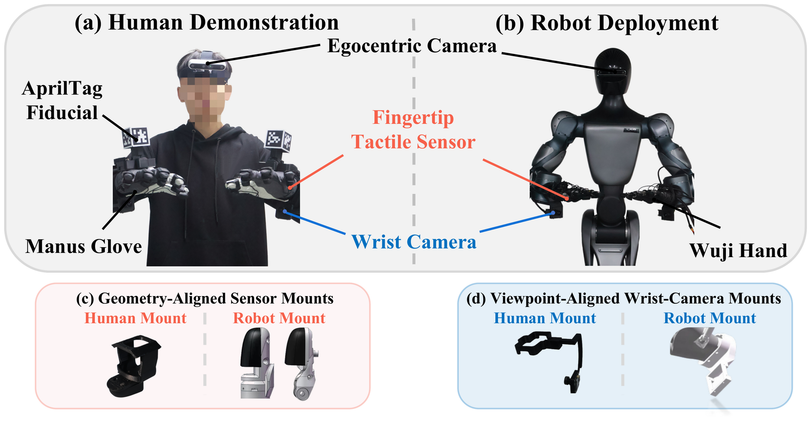
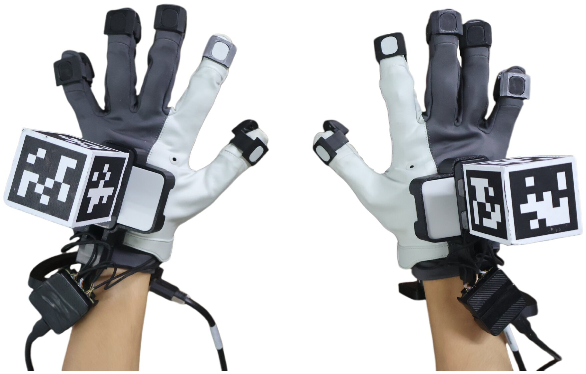

Overview
(vs. 77.5% teleop)
collection
(+42.5 over UniDex)
(lowest)
1 · Motivation
Why touch?
Building foundation models for contact-rich dexterous manipulation requires large amounts of demonstrations that capture not only hand motion, but also physical interaction. Collecting them on real robots through teleoperation is slow and labor-intensive. Human demonstrations are far cheaper — yet turning them into robot-executable training data faces two challenges.
1.1 Kinematics alone does not preserve contact
Conventional retargeting matches hand poses, fingertip positions or hand-centric vectors. This works for free-space motion, but it does not explicitly model contact: a fingertip may slide off its support region, relations among simultaneous contacts can be distorted, or contact may be lost altogether. A motion that looks kinematically plausible can still be physically useless.
1.2 Physical fidelity should not cost scalability
Object-aware pipelines bring in hand–object geometry or physics, and other approaches refine trajectories with simulation and reinforcement learning. They improve physical consistency, but need object meshes, pose estimation, environment reconstruction or simulated rollouts — overhead that is hard to scale to large, diverse human datasets.
1.3 Our key insight
Physical contact itself provides a natural correspondence across embodiments.
Tactile sensing directly tells us which fingertips are in contact, where contact occurs and how strongly each region is loaded. Because these signals are measured during the human demonstration, they provide interaction constraints without reconstructing the object or running a simulator — addressing both challenges at once.
1.4 Comparison with prior frameworks
| Method | High-DoF Hands | Sim-Free | No Object Pose / Geom. | Robot-Free Fine-Tuning |
|---|---|---|---|---|
| TouchBridge (ours) | ✓ | ✓ | ✓ | ✓ |
| AINA | ✗ | ✓ | ✗ | ✓ |
| HumanEgo | ✗ | ✓ | ✗ | ✓ |
| DexUMI | ✗ | ✓ | ✓ | ✓ |
| ManipTrans | ✓ | ✗ | ✗ | ✓ |
| TopoRetarget | ✓ | ✗ | ✗ | ✓ |
| RoboPaint | – | ✗ | ✗ | ✓ |
| SPIDER | ✓ | ✗ | ✗ | ✓ |
| C2Dex | – | ✗ | ✗ | – |
| MotionTrans | – | ✓ | ✓ | ✗ |
| EgoMimic | ✗ | ✓ | ✓ | ✗ |
2 · Method
How TouchBridge works
2.1 Human–robot vision and tactile system
TouchBridge-Cap and the robot share the same wrist-camera viewpoint and fingertip tactile layout.


Stable hand tracking
Under fast hand motion or wrist flips: tracking loss, pose jumps and latency.
Multi-face AprilTags tracked in the egocentric video stay visible and frame-synchronized.
2.2 Human-to-robot data transformation
3 · Experiments
Does it work on a real robot?
3.1 Human-derived vs. teleoperated robot data
3.2 Tac-Retarget vs. kinematic retargeting
Contact preservation Simulation
| Method | Contact error (mm) ↓ |
|---|---|
| Tac-Retarget (Ours) | 4.667 |
| DexPilot | 6.354 |
| UniDex | 7.715 |
| Tac-Retarget w/o contact graph | 6.659 |
| Tac-Retarget w/o contact alignment | 7.071 |
| Tac-Retarget (kinematic only) | 7.540 |
Downstream policy performance Real robot
4 · Conclusion
Takeaways
TouchBridge is a hardware–software co-designed framework for learning contact-rich dexterous manipulation without task-specific robot demonstrations. TouchBridge-Cap makes human data collection fast, and Tac-Retarget transfers motion while preserving contact — producing robot-domain data without object meshes, object-pose estimates or simulation-based refinement. With 7.0× faster collection and policy success close to that obtained from robot-collected data, we hope TouchBridge offers a practical path to scale robot learning from human demonstrations.